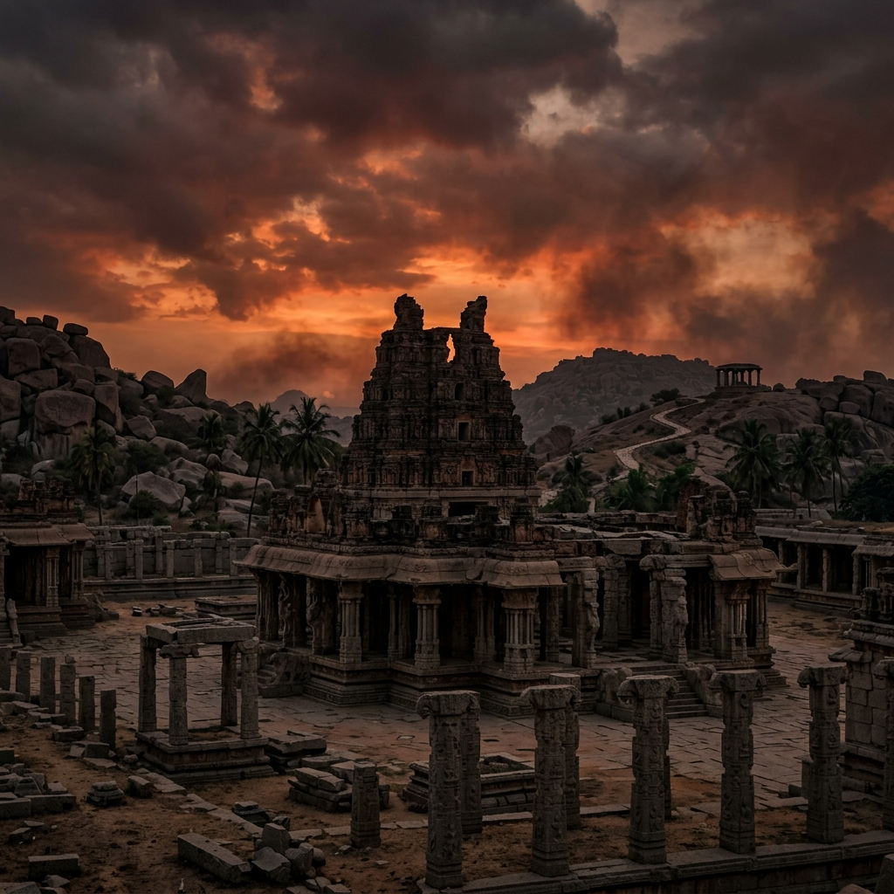
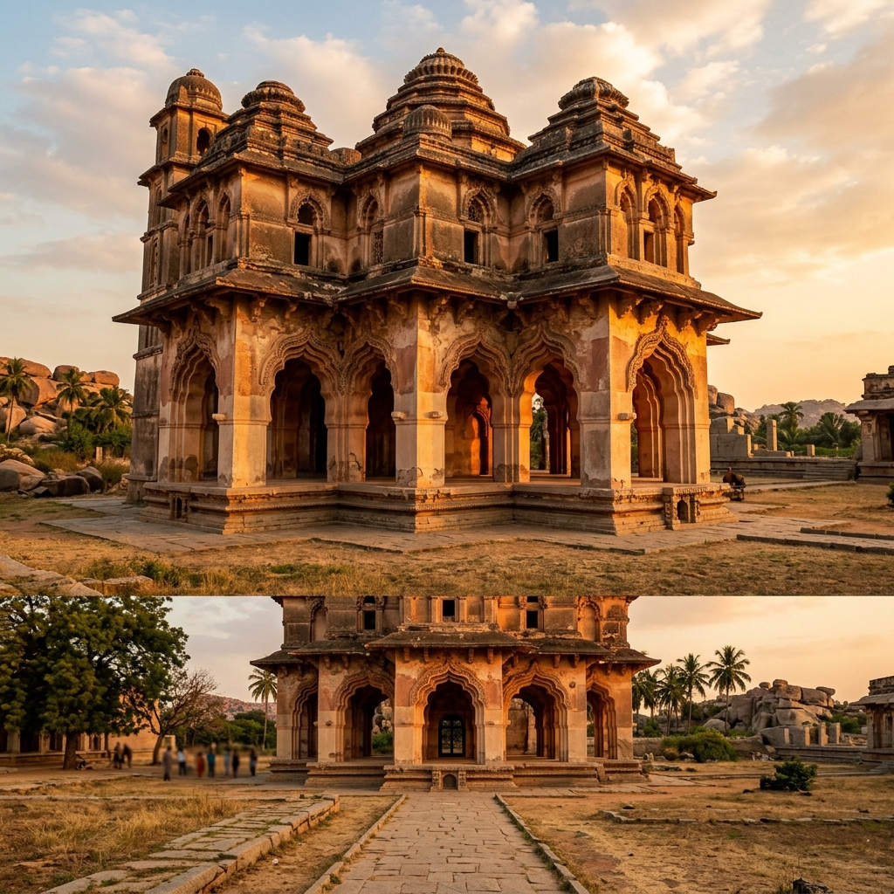

Battle of Talikota Explorer
Step among the scorched stones of Hampi. Explore the fateful clash of dynasties where a grand alliance of Deccan Sultanates overthrew the Vijayanagara Empire, reshaped medieval South India, and left an architectural wonder in ruins.
The Clash of Deccan Hegemony
By the mid-16th century, the Vijayanagara Empire, under the de facto rule of the prime minister Rama Raya, reached its peak of influence. Rama Raya played the rival Deccan Sultanates against one another to expand Vijayanagara borders. However, this aggressive diplomacy ultimately backfired, uniting the rival states against a common enemy.
The rulers of Bijapur, Golconda, Ahmadnagar, and Bidar formed a grand military alliance. In early 1565, their combined armies crossed the Krishna River, confronting Rama Raya's massive imperial host at Talikota. The battle would end in a decisive defeat for the empire and the sacking of Hampi.
🏛️ At a Glance
- Combatants: Vijayanagara Empire vs. United Deccan Sultanates Alliance.
- Commanders: Rama Raya vs. Hussain Nizam Shah I & Ali Adil Shah I.
- Outcome: Decisive Sultanate victory; fall of Vijayanagara.
- Aftermath: Complete sacking and destruction of the capital city, Hampi.
Opposing Belligerents & States
Discover the empires and states that clashed in northern Karnataka in 1565.
Vijayanagara Empire
Led by Rama Raya and his brothers. Supported by a large army of traditional infantries, heavy cavalry, and battle elephants.
Ahmadnagar Sultanate
Led by Hussain Nizam Shah I, who deployed a formidable battery of heavy gunpowder artillery under Ottoman direction.
Bijapur Sultanate
Led by Ali Adil Shah I, contributing highly mobile horse archers and auxiliary units that executed crucial flanking maneuvers.
Golconda & Bidar
Led by Ibrahim Qutb Shah and Ali Barid Shah, providing heavy cavalry forces that reinforced the center division.
📈 Tactical Formations
- Artillery Vanguard: The Sultanate forces concealed their heavy cannons behind screening lines of cavalry.
- Sultanate Cannons: Chalabi Rumi Khan commanded bronze cannons loaded with bags of copper coins and iron grapeshot.
- Betrayal: Two key Muslim commanders (the Gilani brothers) defected from the Vijayanagara lines.
- Execution: Nizam Shah I captured and executed Rama Raya, leading to panic and retreat.
The Siege Tactics and the Mid-battle Defection
The battle opened with a massive exchange of arrows and rockets. Rama Raya deployed his war elephants to break the allied front. However, Nizam Shah I ordered the screening cavalry to pull back, exposing a line of heavy cannons. The Sultanate artillery fired a devastating volley of grapeshot directly into the advancing Vijayanagara ranks.
At this critical moment, two Muslim commanders serving Vijayanagara—the Gilani brothers—defected with their divisions, throwing the imperial lines into confusion. Rama Raya was thrown from his elephant, captured, and executed, causing his remaining forces to retreat.
The Fall of the Southern Empire
The aftermath of the battle changed the course of South Indian history and culture.
Sacking of Hampi
The victors occupied the imperial capital of Vijayanagara, looting its treasures and systematically burning its palaces over five months.
Aravidu Dynasty Shift
Rama Raya's brother Tirumala escaped south with the royal treasury, establishing a successor state at Penukonda.
Rise of Local Nayakas
The collapse of central imperial authority allowed provincial governors (Nayakas) of Madurai, Tanjore, and Gingee to declare independence.
Chronology of the Fall
Follow the campaign events of the late 1564 to 1565 expedition.
Sultanate Alliance
The Sultanates of Bijapur, Bidar, Golconda, and Ahmadnagar resolve their disputes and gather their armies at Talikota.
March to the Krishna
The allied Sultanates march south to the Krishna River, establishing positions on the northern bank.
The Battle of Talikota
The armies engage. A combination of heavy artillery fire and tactical betrayals breaks the Vijayanagara forces.
The Destruction of Hampi
Allied forces enter the capital, methodically destroying and looting the imperial city, leaving it in ruins.
Relics of the Ruined Empire
Explore the ruins of the capital city and the heavy weapons used in the conflict.

Vittala Temple Ruins
The stone pillars and colonnades showing structural damage from the sacking of 1565.

Malik-e-Maidan Cannon
The historic Deccan heavy cannon constructed in the 16th century.

Lotus Mahal at Hampi
The vaulted arches of the royal enclosure that survived the destruction.
📚 References & Further Reading
- Ferishta, Muhammad Qasim (c. 1612 CE). Tarikh-i Ferishta (History of the Mohammedan Power in India).
- Sewell, Robert (1900). A Forgotten Empire (Vijayanagar). Swan Sonnenschein & Co.
- Eaton, Richard M. (2005). A Social History of the Deccan, 1300-1761: Eight Indian Lives. Cambridge University Press.
- Federici, Caesare (c. 1570). The Voyage and Travel of M. Caesar Frederick, Merchant of Venice, into the East India.